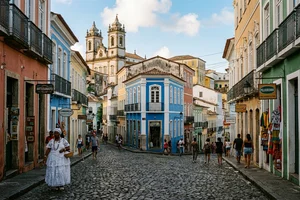
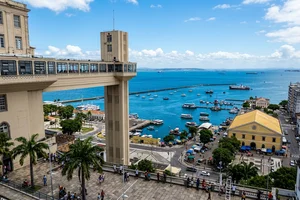
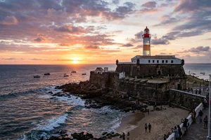
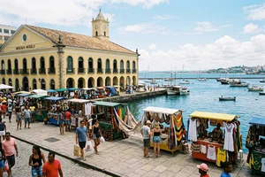
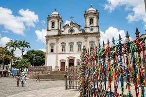
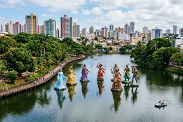
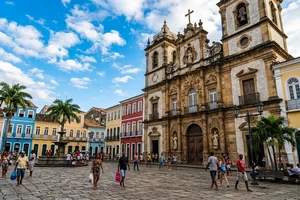
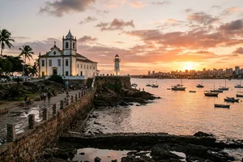

Primeira capital do Brasil e epicentro cultural da América do Sul, Salvador combina um legado histórico
incomparável, forte polo portuário e industrial, e um ambiente comercial dinâmico que atrai empreendedores,
investidores e visitantes de todo o mundo.
📊Panorama Demográfico e Econômico
2,41 Milhões
População Urbana
4ª capital mais populosa do Brasil e a 2ª maior do Nordeste, sede de um polo metropolitano com mais de 3,9 milhões de pessoas.
R$ 65+ Bilhões
Produto Interno Bruto (PIB)
Liderança regional nos setores de serviços, logística portuária, turismo de experiência, tecnologia e economia criativa.
26°C Média Anual
Clima e Localização
Clima tropical quente e úmido com brisa marítima constante, banhada pelas águas calmas da deslumbrante Baía de Todos os Santos.
13 Municípios
Região Metropolitana
Integração logística privilegiada conectando o Porto de Salvador, polo petroquímico e malhas rodoviárias e aeroportuárias estratégicas.
Pontos de Interesse e Atrativos da Área
Explore oito marcos fundamentais que expressam a identidade, a cultura e a força turística de Salvador.
Pelourinho & Centro Histórico

Patrimônio Mundial da UNESCO, o Pelourinho reúne o mais rico conjunto barroco colonial das Américas, centro pulsante de arte, culinária e música afro-baiana.
Largo do Pelourinho, s/n - Pelourinho, Salvador - BA, 40026-280
Elevador Lacerda

Primeiro elevador urbano do mundo (1873), conecta a Cidade Baixa à Cidade Alta proporcionando uma vista panorâmica deslumbrante da Baía de Todos os Santos.
Praça Tomé de Souza, s/n - Centro Histórico, Salvador - BA, 40020-000
Farol da Barra & Forte Santo Antônio

A mais antiga fortificação militar do Brasil (1534), abriga o Museu Náutico da Bahia e um dos pores do sol mais emblemáticos e concorridos da costa brasileira.
Largo do Farol da Barra, s/n - Barra, Salvador - BA, 40140-650
Mercado Modelo

Principal centro comercial de artesanato e cultura popular da Bahia, reunindo mais de 250 boxes com peças exclusivas, rendas, instrumentos e restaurantes típicos.
Praça Visconde de Cayru, s/n - Comércio, Salvador - BA, 40015-170
Basílica do Senhor do Bonfim

Maior ícone da fé e da tradição soteropolitana, célebre pela tradicional Lavagem do Bonfim e pelas milhares de fitinhas coloridas amarradas em suas grades.
Praça Senhor do Bonfim, s/n - Bonfim, Salvador - BA, 40415-180
Dique do Tororó

Espelho d'água natural cercado por área verde, decorado pelas imponentes esculturas flutuantes dos Orixás criadas pelo artista plástico baiano Tatti Moreno.
Av. Vasco da Gama, s/n - Tororó, Salvador - BA, 40050-400
Igreja e Convento de São Francisco

Conhecida mundialmente como a 'Igreja de Ouro', destaca-se pela impressionante ornamentação barroca interna revestida de ouro e azulejaria portuguesa do século XVIII.
Largo do Cruzeiro de São Francisco, s/n - Pelourinho, Salvador - BA, 40020-280
Ponta de Humaitá & Forte Monte Serrat

Península charmosa com igreja secular, deque de pedra e farolete histórico, proporcionando uma das vistas mais poéticas e tranquilas para a Baía de Todos os Santos.
Rua Santa Rita Durão, s/n - Monte Serrat, Salvador - BA, 40425-270